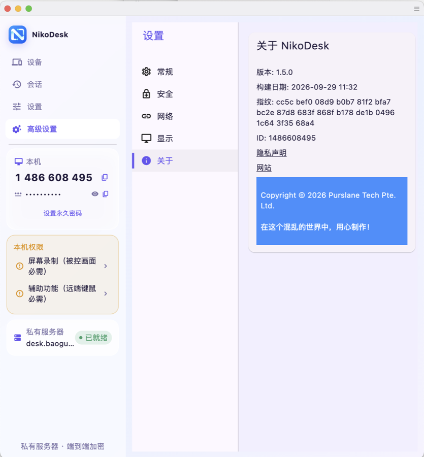
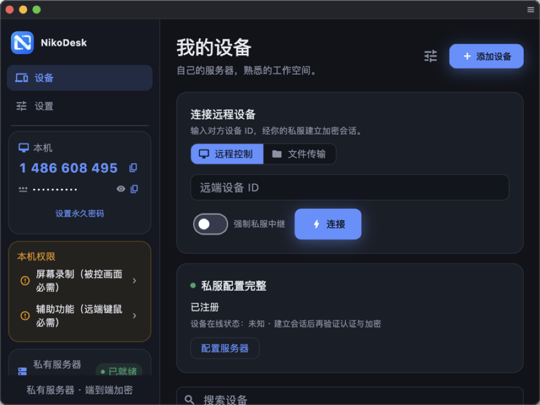

NikoDesk 是基于 RustDesk 内核打造的产品级客户端，只有一条铁律： 只连你自己的协调服务器，否则一个字节都不发。没有公共回退、没有免密握手、没有未经校验的更新。


所有 SaaS 远控都会把握手——乃至会话本身——交给厂商基础设施中转。NikoDesk 把这个第三方从路径上拿掉。
你的服务器只负责撮合握手；直连打洞失败时才中转，且中转的是端到端加密流量。它永远拿不到明文画面或密码。
| NikoDesk | SaaS 远控 | |
|---|---|---|
| 握手与中继 | 仅你的服务器 | 厂商云 |
| 公共服务器回退 | 编译期移除 | 默认行为 |
| 免密连接 | 客户端直接拒绝 | 常见流程 |
| 更新信任根 | GitHub Releases + SHA256 | 厂商流水线 |
| 遥测 / 账号 | 无 | 通常都有 |
任何能跑 Docker 的 x86_64/arm 机器都行——家用 NAS 是最常见的选择。
# docker-compose.yml —— 协调服务 (hbbs) + 中继 (hbbr)
services:
hbbs:
image: rustdesk/rustdesk-server:latest
command: hbbs
volumes: [ "./data:/root" ]
ports:
- "21115:21115"
- "21116:21116"
- "21116:21116/udp"
- "21118:21118"
hbbr:
image: rustdesk/rustdesk-server:latest
command: hbbr
volumes: [ "./data:/root" ]
ports:
- "21117:21117"
- "21119:21119"
docker compose up -d。密钥对生成在 ./data——
id_ed25519 私钥留在服务器，把 .pub 内容填进客户端。
设置 → 私有服务器：ID 服务器、中继、公钥。NikoDesk 三要素联合校验，配置有误就不连接、不回退。
控制端用任意 RustDesk 客户端即可。输入设备 ID 和它的密码——只有 ID 时 NikoDesk 拒绝发起会话。
远程控制、文件传输、剪贴板同步、多显示器切换、VP8/VP9/AV1/H.264/HEVC 硬件编解码——同一套久经考验的引擎，重新包装成产品。
设备卡片支持别名、分组、收藏，在线状态来自协调服务器的真实查询。无法证明在线时就显示未知，绝不瞎猜。
本地存储、上限 200 条、抗损坏。只记录你发起过什么，绝不冒称远端已接受——一键按原参数重连。
入站会话弹出确认卡，键鼠/剪贴板/文件/音频权限开关实时可见——接受即授权，会话中途可随时收回。
明亮工作台用柔和渐变玻璃，暗夜主题是深蓝控制台。默认跟随系统、可手动切换，覆盖首页、设置与确认窗口。
独立的 Bundle ID、配置目录、IPC 命名空间与设备身份。两个都装、都跑——互不读写对方状态。
v1.0.0 有意不包含：终端、TCP/UDP 隧道、摄像头查看、远程重启、隐私模式与屏蔽本机输入——这些在编译期移除，而不是藏在设置里。
"仅私服"在连接层强制执行：未配置或配置错误时完全不会发起连接，rustdesk.com 端点会被配置校验器直接拒绝。
控制端必须先输入远端密码，任何握手才会发出。被控端每个会话都重新确认权限，设备私钥永远不离开被控设备。
更新器只通过 HTTPS 访问 api.github.com 与发布域名（白名单、重定向逐跳复检），下载包与发布方公布的 SHA256 不一致就什么都不装。失败即关闭。
发布版为本地签名（无 Apple Developer ID / 公证）。组织内大范围分发前，请用你自己的证书重新签名。
每个产物都附带同一 Release 里公布的 SHA256SUMS——应用内更新器校验的正是这个文件。
官方 RustDesk 默认连厂商公共服务器，并允许免密确认流程。NikoDesk 把"仅私服"策略编译进客户端、以密码门控控制端、提供全新产品化界面和可验证更新。协议完全兼容：任意 RustDesk 客户端与 NikoDesk 设备可互相控制。
是的——这正是意义所在。hbbs/hbbr 在 4 欧的 VPS 或任何能跑 Docker 的 NAS 上都跑得很好。没配置服务器时，NikoDesk 哪儿都不连。
可以。Bundle ID（io.nikodesk.macos）、配置与 IPC 命名空间、设备身份全部独立，互不触碰对方文件。
设置 → 软件更新 → 检查更新。macOS 会自动下载、对照发布清单校验 SHA256 并替换应用；Windows/Android 提供同一版本的下载链接。
v1.0.0 覆盖控制、文件传输、剪贴板、多显示器、会话记录与权限引导。需要提权或削弱隔离的功能（隐私模式、远程重启、隧道）有意不做。路线图在仓库 Issues 里。
是的——与上游 RustDesk 相同：双方交换由设备身份签名的密钥，中继流量端到端加密；hbbr 中继只能看到密文。